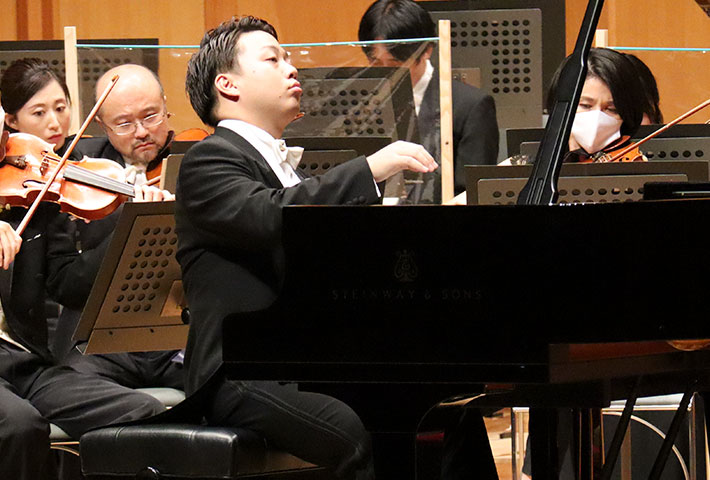
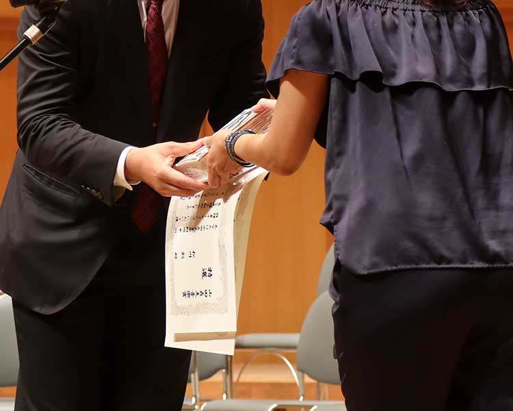
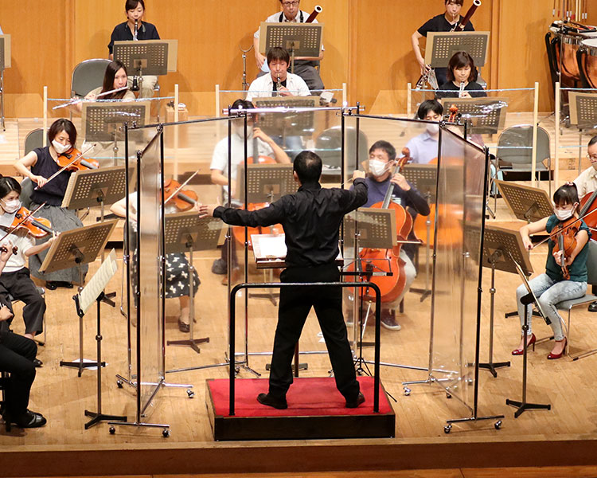
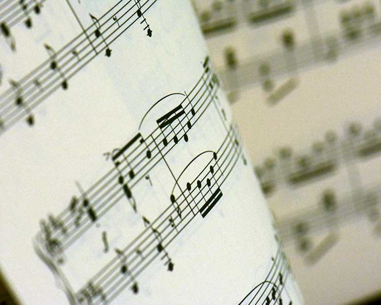
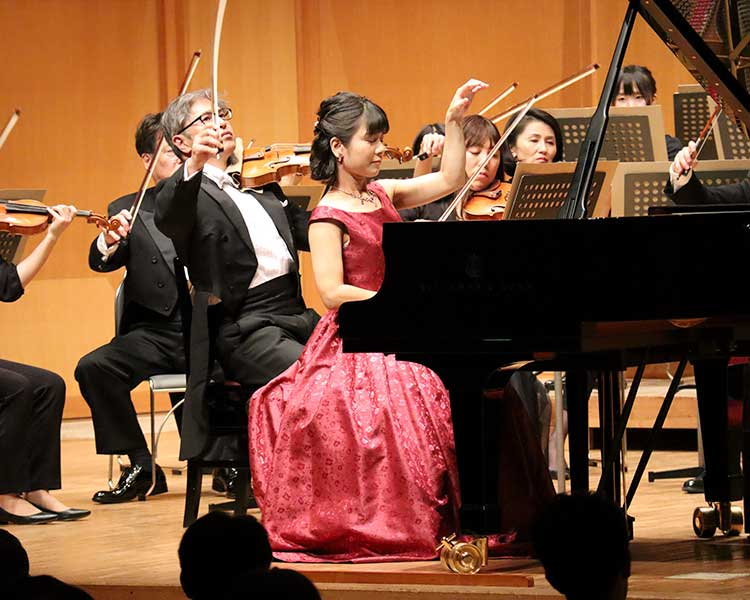

SUPPORT 音楽家支援
01 新進演奏家コンクール
愛知県内で活動している新人クラシック音楽家に贈呈
愛知県内で活躍している将来有望な新人クラシック音楽家活動を支援し、愛知県の文化芸術の振興に寄与することを目的としています。
募集要項
| 募集部門 | ピアノ ヴァイオリン 管楽器 |
|---|---|
| 対象者 |
応募される方は次に掲げる要件を満たす方とします。 ◆愛知県内で活動している新人クラシック音楽家（2026年3月または昨年2025年3月に音楽大学または音楽大学大学院を卒業された方、 大学院在学中の方は対象外とさせていただきます。） |
| 応募手続 | 応募される方は、当財団HPの応募者用リンクより応募ページに入っていただき、必要事項をご入力ください。応募は無料です。
お問合せ先公益財団法人 山田貞夫音楽財団 事務局 |
| 応募期間 | 2026年3月16日（月）~2026年5月30日（金） |
| 選考及び決定 | 受賞者は山田貞夫音楽賞選考委員会で選考し､決定します。 スケジュール◆第一次選考書類審査及び音源審査（会場/ダイドーロボット館） ◆第二次選考演奏選考（会場/電気文化会館ザ・コンサートホール） 第二次選考課題曲ピアノ伴奏付きで以下の曲から1曲を演奏 ◆ピアノ
◆ヴァイオリン
◆管楽器（オーボエ）
◆管楽器（クラリネット）
◆管楽器（トランペット）
|
| 決定の通知 |
第一次選考 メールで本人に通知します。 第二次選考 選考日当日発表します。 |
| 山田貞夫音楽賞 受賞者 |
賞金10万円を贈呈します。 |
| 特選受賞者 | 山田貞夫音楽賞に加え賞金20万円を贈呈します。 2026年9月29日（火）に「しらかわホール」にてオーケストラと協奏曲を演奏していただきます。 |
| 選考委員 |
|

02 指揮者オーディション
「この指揮で演奏してみたい！」
演奏家が選ぶ指揮者オーディション
募集要項
| 対象者 |
応募される方は次に掲げる要件を満たす方とします。 ◆愛知県で演奏実績（指揮者として）のある38歳以下（2026年4月1日時点）の方。※過去に最優秀となった方は応募不可。 |
|---|---|
| 応募手続 | 応募される方は、当財団HPの応募者用リンクより応募ページに入っていただき、必要事項をご入力ください。※応募は無料です。 応募フォームへお問合せ先公益財団法人 山田貞夫音楽財団 事務局 |
| 応募期間 | 2026年4月1日（水）~2026年7月10日（金） |
| 選考及び決定 |
受賞者は山田貞夫音楽賞選考委員会で選考し、決定します。 スケジュール◇第一次選考／書類選考2026年7月31日（金） ◇第二次選考／演奏選考（会場／しらかわホール）2026年10月5日（月） ◇本選／オーディション（会場／しらかわホール）2026年10月6日（火） 課題曲/選択曲◆課題曲
◆選択曲
|
| 決定の通知 |
第一次選考︓2026年8月末日迄にメールで本人に通知します。 第二次選考︓選考日当日に発表します。 本選︓オーディション当日に発表します。 |
| 山田貞夫音楽賞 受賞者 |
賞金10万円を贈呈します。 |
| 特選受賞者 | 山田貞夫音楽賞に加え賞金20万円を贈呈します。 特選受賞者には2026年12月4日（金）に「しらかわホール」にて交響曲を指揮していただきます。（演奏︓セントラル愛知交響楽団） 演奏者には賞金に加え奨学金として30万円を贈呈します。 |
| 選考委員 |
|

03 奨学金
クラシック音楽を音楽大学または大学院で
専攻する在学生に対する奨学金の給付
愛知県所在の音楽大学またはその大学院の在学生、または愛知県出身者で、クラシック音楽を専攻する音楽大学またはその大学院の在学生に対し、月額4万円(年額48万円)奨学金を給付する。
※今年度の募集については近日掲載予定です。

04 受賞者・奨学生
山田貞夫音楽賞
| 2025年 | 第13回 |
|
|---|---|---|
| 2024年 | 第12回 |
|
| 2023年 | 第11回 |
|
| 2022年 | 第10回 |
|
| 2021年 | 第9回 |
|
| 2020年 | 第8回 |
|
| 2019年 | 第7回 |
|
| 2018年 | 第6回 |
|
| 2017年 | 第5回 |
|
| 2016年 | 第4回 |
|
| 2015年 | 第3回 |
|
| 2014年 | 第2回 |
|
| 2013年 | 第1回 |
|
（順不同・敬称略）
指揮者オーディション
| 2025年 | 第7回 |
|
|---|---|---|
| 2024年 | 第6回 |
|
| 2023年 | 第5回 |
|
| 2022年 | 第4回 |
|
| 2021年 | 第3回 |
|
| 2020年 | 第2回 |
|
| 2019年 | 第1回 |
|
（順不同・敬称略）
奨学生
財団の奨学生として学び、現在活躍されている方々をご紹介します。
